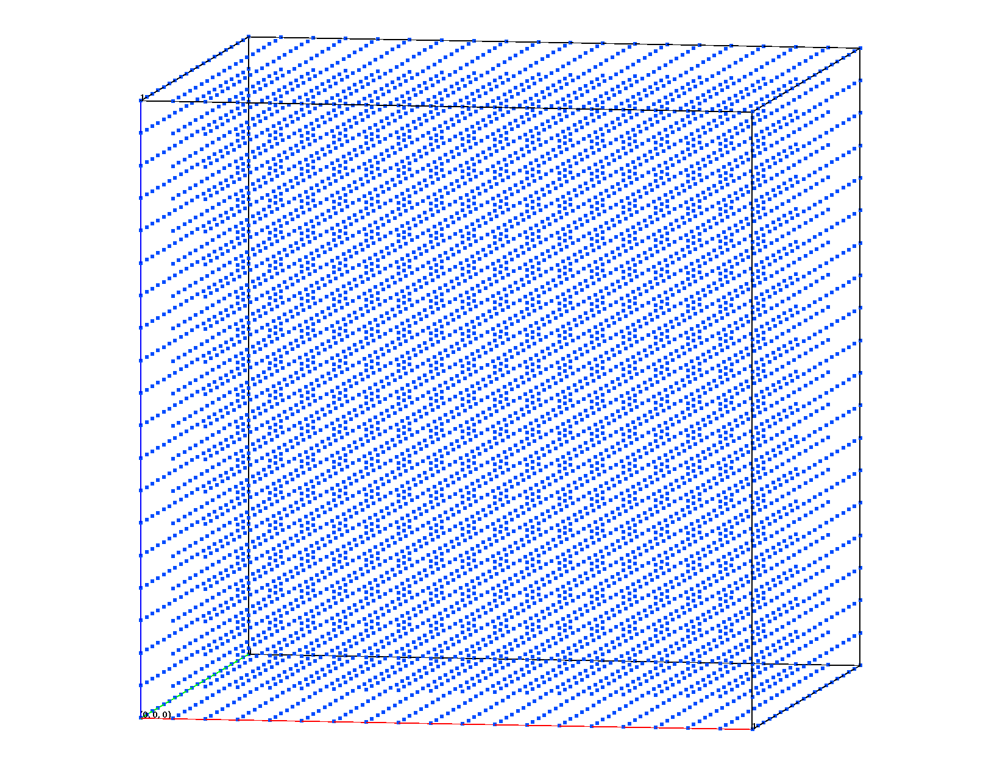
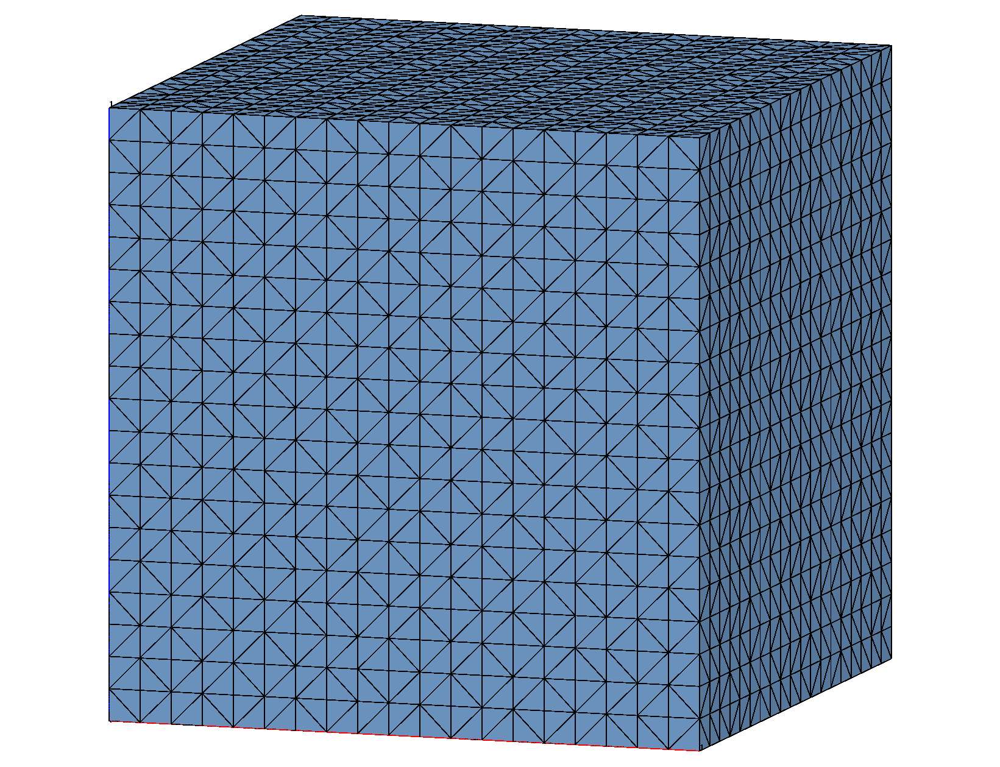

The objective is to connect a set of existing nodes (3 dimensional) into a tetrahedral mesh that satisfies the Delaunay criterion using the connect command. The output consists of two mesh files - one showing the point distribution and the other showing the resulting tetrahedral mesh.
GMV and AVS format mesh files are written here. The AVS format is common and can be read by many applications. The GMV (General Mesh Viewer) files are best read by GMV but other applications such as VisIt and MATLAB can read them.
Input Points Output Tet Mesh
On the command line this would be:
lagrit < input.lgi
Note all files must end with a “finish” command to exit gracefully. Comments help as reminders for what is being done. The use of the define command makes it easy to change command parameters from run to run. The images above visualize the point file input_points.inp and the tetrahedral mesh output_connect.inp.
# TEST connect (3d) (lagrit_input_connect)
# LaGriT input file to generate an orthogonal grid on
# a unit cube. Just change nx,ny,nz to change the resolution.
#
define/nx/20
define/ny/20
define/nz/20
cmo / create / cmo / / / tet
createpts/xyz/ nx ny nz/ 0. 0. 0. / 1. 1. 1. / 1 1 1
cmo / setatt / cmo / imt / 1 0 0 / 1
dump/ gmv /output_conn1.gmv/cmo
# write the point files
dump / gmv / input_points.gmv/cmo
dump / avs / input_points.inp/cmo
# no materials so turn off interface detection
connect / noadd
resetpts / itp
# write the mesh files
dump / gmv / output_connect.gmv/cmo
dump / avs / output_connect.inp/cmo
# write mesh object information
cmo/status
cmo/printatt//-all-/minmax
quality
finish
LaGriT will echo commands and report information during the run. These are written to the screen and the file lagrit.out (or outx3dgen). This information can be very useful, it will report Errors and Warnings to help the user figure out what may have gone wrong.
There are also many commands that report the status and condition of the mesh object. For instance, the cmo/printatt//-all-/minmax command writes the current mesh object attributes and the min and max for each. The quality command reports element aspect ratios and volumes. Negative or zero volumes can indicate a problem with how the mesh was created.
cmo/create/cmo///tet
createpts/xyz/nx ny nz/0. 0. 0./1. 1. 1./1 1 1
RZ GENERATED POINTS 1 TO 8000
cmo/setatt/cmo/imt/1 0 0/1
Warning: nelements = 0
8000 values reset for attribute imt1
connect/noadd
Coordinates of enclosing tetrahedron are:
-0.20000D+01 -0.75000D+00 -0.75000D+00
0.50000D+00 -0.75000D+00 0.42500D+01
0.30000D+01 -0.75000D+00 -0.75000D+00
0.50000D+00 0.42500D+01 0.50000D+00
ntets= 29572 node index= 5000 nlstfail= 0 %done= 61.58
The mesh is now complete!
LaGriT FINISH: connect
cmo/printatt//-all-/minmax
ATTRIBUTE NAME MIN MAX DIFFERENCE LENGTH
-def- 0.000000000E+00 0.000000000E+00 0.000000000E+00 8000
scalar 1 1 0 1
vector 3 3 0 1
nnodes 8000 8000 0 1
nedges 0 0 0 1
nfaces 0 0 0 1
nelements 40751 40751 0 1
mbndry 16000000 16000000 0 1
ndimensions_topo 3 3 0 1
ndimensions_geom 3 3 0 1
nodes_per_element 4 4 0 1
edges_per_element 6 6 0 1
faces_per_element 4 4 0 1
isetwd 0 0 0 8000
ialias 0 0 0 8000
imt1 1 1 0 8000
itp1 0 10 10 8000
icr1 0 0 0 8000
isn1 0 0 0 8000
xic 0.000000000E+00 1.000000000E+00 1.000000000E+00 8000
yic 0.000000000E+00 1.000000000E+00 1.000000000E+00 8000
zic 0.000000000E+00 1.000000000E+00 1.000000000E+00 8000
xtetwd 0 0 0 40751
itetclr 1 1 0 40751
itettyp 5 5 0 40751
itetoff 0 163000 163000 40751
jtetoff 0 163000 163000 40751
itet 1 8000 7999 40751x4
jtet 1 16000000 15999999 40751x4
epsilon 1.000000004E-15 1.000000004E-15 0.000000000E+00 1
epsilonl 3.845925373E-13 3.845925373E-13 0.000000000E+00 1
epsilona 6.661338148E-13 6.661338148E-13 0.000000000E+00 1
epsilonv 2.220446049E-13 2.220446049E-13 0.000000000E+00 1
ipointi 8000 8000 0 1
ipointj 8000 8000 0 1
idebug 0 0 0 1
itypconv_sm 1 1 0 1
maxiter_sm 25 25 0 1
tolconv_sm 1.000000000E+00 1.000000000E+00 0.000000000E+00 1
nnfreq 1 1 0 1
ivoronoi 1 1 0 1
iopt2to2 2 2 0 1
xmin 0.000000000E+00 0.000000000E+00 0.000000000E+00 1
ymin 0.000000000E+00 0.000000000E+00 0.000000000E+00 1
zmin 0.000000000E+00 0.000000000E+00 0.000000000E+00 1
xmax 1.000000000E+00 1.000000000E+00 0.000000000E+00 1
ymax 1.000000000E+00 1.000000000E+00 0.000000000E+00 1
zmax 1.000000000E+00 1.000000000E+00 0.000000000E+00 1
kdtree_level 0 0 0 1
max_number_sets 64 64 0 1
number_of_psets 0 0 0 1
number_of_eltsets 0 0 0 1
number_of_fsets 0 0 0 1
quality
epsilonl, epsilonaspect: 3.8459254E-13 5.6885628E-38
--------------------------------------------
elements with aspect ratio < .01: 0
elements with aspect ratio b/w .01 and .02: 0
elements with aspect ratio b/w .02 and .05: 0
elements with aspect ratio b/w .05 and .1 : 0
elements with aspect ratio b/w .1 and .2 : 0
elements with aspect ratio b/w .2 and .5 : 0
elements with aspect ratio b/w .5 and 1. : 40751
min aspect ratio = 0.6230E+00 max aspect ratio = 0.1000E+01
epsilonvol: 2.2204460E-13
---------------------------------------
element volumes b/w 0.2430E-04 and 0.2791E-04: 40348
element volumes b/w 0.2791E-04 and 0.3206E-04: 0
element volumes b/w 0.3206E-04 and 0.3683E-04: 0
element volumes b/w 0.3683E-04 and 0.4231E-04: 0
element volumes b/w 0.4231E-04 and 0.4860E-04: 403
min volume = 2.4298975E-05 max volume = 4.8597949E-05
-----------------------------------------------------------
40751 total elements evaluated.
finish
{kind=link}
{kind=link}